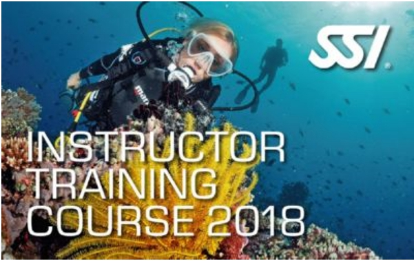

|
SSI從1970年開始就一直是專業教育系統中的領導者了。我們的專業導潛課程旨在幫助那些想要更深入進行潛水活動的人們，建立一個更全面的潛水技巧與觀念。
但是身為專業導潛員還不足以擔負教練的責任，因為這僅僅是SSI潛水領導級裡面的入門課程而已。 如果你想要成為一位潛水長你就必須先通過科學潛水專長課程。這個沒有實際潛水訓練的課程，主要是著重在教導有關潛水深度對人體所造成的心理與生理影響， 還有相關的解壓理論、裝備以及水域環境的綜合知識。科學潛水專長就是潛水主管的基礎課程，也是關係著潛水長是否能夠進階到更高等級的關鍵課程。 |
-
專業導潛 DG

SSI專業導潛課程的教學主要著重在實務技能的練習以及彈性的潛水背景教學，目標就是要把你培育成一位準備充分且多才多藝的潛水領導。 只要通過了浮潛教練課程，專業導潛就可以教導並且核發浮潛認證課程了。 學科： 導潛壓力與救援、團隊管理、領導潛水與專長潛水、SSI的職業生涯。 術科： 水性與各項潛水技巧評估、壓力控制、潛點地圖、潛水簡報、夜潛與專業導潛DG實習，總測驗。
每年冬季開班, 共計3天。
- 學費 35,000 元，不含SSI領導級線上登錄費 4,000 元（升等領導級時需登錄線上作業系統）。
- 費用包含：線上教材、國際數位證照申請、教練費、重裝備租借費用、東北角海洋實習費用與保險費。
- 實習日期視海況安排，不限定於開課的四天內完成
- 本課程暫不開放移地訓練
- 潛水長套裝：DG+SOD(DM)，原價 45,000 元，優惠套裝價 39,000 元
- 助理教練套奘：DG+SOD(DM)+AI 原價 93,000 元，優惠套裝價 65,000 元
- 教練套奘：DG+SOD(DM)+AI+ITC 原價 133,000 元，優惠套裝價 100,000 元 (不含IE教練考試)
-
潛水長 DM

只要具有專業導潛認證加上科學潛水專長，您就可以躍升為潛水長了。身為潛水長，你將具有以下資格：教導體驗潛水課程(游泳池)， 在教練直接的監督下協助其進行游泳池／平靜水域訓練以及開放水域訓練。 學科： 潛水科學專長：潛水物理學、潛水生理學、減壓理論、裝備維修保養、期末測驗。
每年冬季開班, 共計3天。
- 學費 10,000 元，不含SSI領導級線上登錄費 4,000 元（由DG升等DM時需要登錄）。
- 費用包含：線上教材、國際數位證照申請、教練費。
- 完成本課程可取得科學潛水員專長SOD執照。
- 潛水長套裝：DG+SOD(DM)，原價 45,000 元，優惠套裝價 39,000 元
- 助理教練套奘：DG+SOD(DM)+AI 原價 93,000 元，優惠套裝價 65,000 元
- 教練套奘：DG+SOD(DM)+AI+ITC 原價 133,000 元，優惠套裝價 100,000 元 (不含IE教練考試)
-
助理教練 AI
 你可以透過三種方式參加潛水主管的課程，分別是：個別參加專業導潛、科學潛水與潛水主管課程；將三項課程整合成單一課程；透過其他機構的潛水長身分參加此課程
身為一位潛水主管，你將具有下列資格：帶領或是指導擁有認證的潛水員進行潛水；協助SSI 教練進行學科、游泳池、開放水域的教學；在教練直接的監督下自行指導學科或是游泳池訓練(除了及緊急救援課程外)；執行SSI 水肺潛水技能復習課程、SSI 浮潛課程、SSI 體驗潛水課程(游泳池)；晉升為特殊專長訓練主管。學科： 認識 SSI、作為一位 SSI 潛水專業人士的職責、課程行政作業、教授學科單元、教授水中訓練單元、助理教練課程。 術科： 水性與體能評估、OWD學科、泳池、海洋結訓之觀察與試教評估。
每年冬季開班, 共計6天。
- 學費 48,000 元。
- 費用包含：線上教材、國際數位證照申請、教練費。
- 潛水長套裝：DG+SOD(DM)，原價 45,000 元，優惠套裝價 39,000 元
- 助理教練套奘：DG+SOD(DM)+AI 原價 93,000 元，優惠套裝價 65,000 元
- 教練套奘：DG+SOD(DM)+AI+ITC 原價 133,000 元，優惠套裝價 100,000 元(不含IE教練考試)
-
iDiving採保證班的教學方式，如果學員延訓不另外加收訓練費或裝備使用費。所有課程須於2
個月內完成 (9月後報名隔年5月前完成)。約定日期之更改須在15天前告知。15天內更動
或未告知而曠課，補課需額外負擔1000元，身體不適，出示醫院掛號收據者不收。 -
若學員自行放棄課程，本訓練中心將不予退費(包含訂金)；但因身體不適且經醫生證明不宜從事潛水活動者，
繳交之訓練費用在扣除已支付的成本後，餘額將全數退還。
- 學員在 iDiving 購買潛水器材享有學員優惠價。
- 課程之訓練費用、器材之購買費用與 2 吋大頭照一張，請於術科前繳齊。
- 海洋實習地點為東北角或各移地結訓地，往返之交通請自行處理。
-
學員結訓後，訓練中心將於兩週內完成 SSI 國際數位潛水證照申請。
（如有急需請先告知，本中心可於課程完成後的兩個工作天內完成申請）